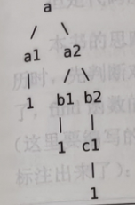
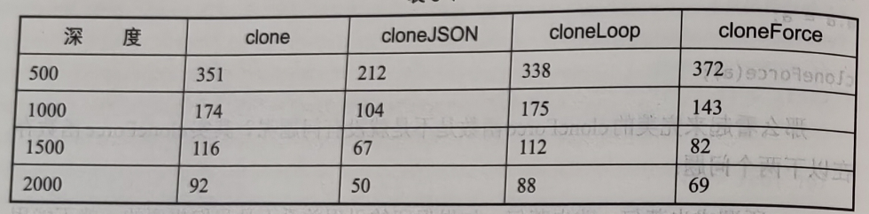
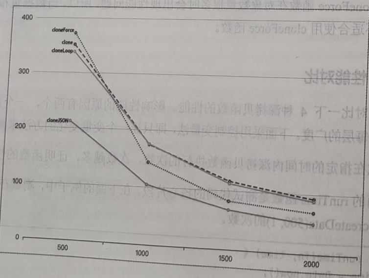
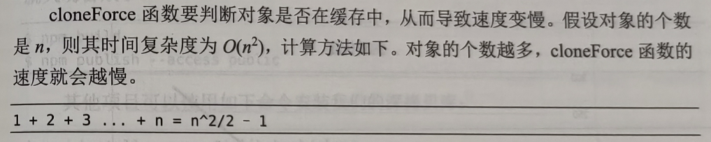
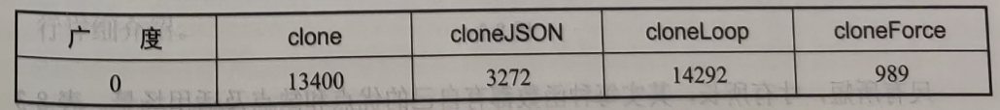
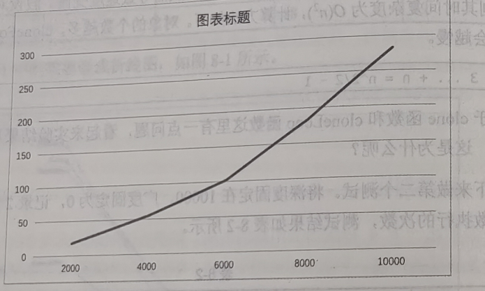
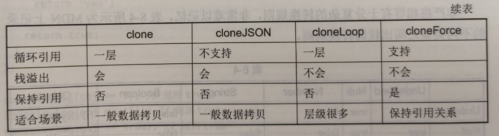
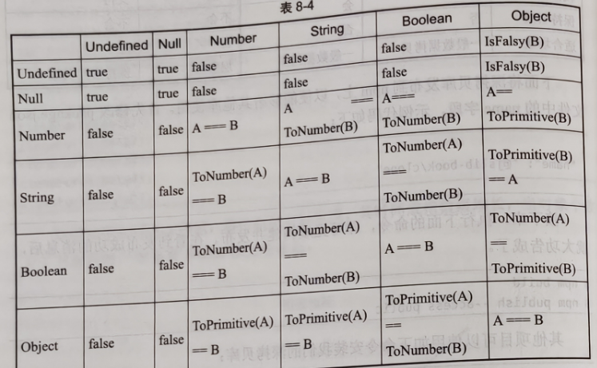

本章将介绍开发库的过程中会用到的通用功能，并将这些功能抽象为基础库，这些库是为更好地开发库而编写的，使用这些库可以极大地提高库的开发效率。
类型判断
背景知识
对于数据为空的情况，经常要做防御式编程，误区之一是使用非运算符直接判断，这会把很多假值计算在内。常见的假值有 0、"(空字符串)、false、null、undefined 等。
function double(x) {
// 0 会被错误的计算
if (!x) {
return NaN;
}
return x * 2;
}
对于判空，另一种写法是直接与 null 和 undefined 进行比较。
function double(x) {
if (x === null || x === undefined) {
return NaN;
}
return x * 2;
}
这种写法有一个比较严重的安全问题。在 JavaScript 中，undefined 并不是关键字而是 window 上的一个属性，在 ECMAScript5 之前这个属性是可写的，如果 undefined 被重新赋值，则在过时浏览器中执行如下代码，由于 undefined 属性被改写了，因此会导致判断不能生效。
window.undefined = 1;
var x;
if (x === undefined) {
// 永远不会执行
}
虽然在现代浏览器中不会有这个 Bug，但是如果函数的作用域中存在名字为 undefined 的变量，则还是会有问题，这被称作 undefined 变量覆盖。
(function () {
var undefined = 1;
var x;
if (x === undefined) {
// 永远不会执行
}
})();
对于判空，还有比较巧妙的方法。可以只和 null 判断相等，借助隐式转换达到同样的效果。由于 null 是 JavaScript 中的关键字，无法作为变量的名字，因此 null 没有 undefined 变量覆盖的问题。
window.undefined = 1;
function double(x) {
if (x == null) {
return NaN;
}
return x * 2;
}
在全等操作符是最佳实践的背景下，这种做法并不被鼓励。还可以使用 typeof 操作符来判断 undefined，typeof 通过内部类型判断，不存在 undefined 变量覆盖的问题。
window.undefined = 1;
function double(x) {
if (x == null || typeof x === "undefined") {
return NaN;
}
return x * 2;
}
下面来看 number 类型数据的判断问题。对于 number 类型数据，有个需要注意的地方，在 JavaScript 中有个特殊的值叫作 NaN，NaN 的类型也是 number，编码中很少直接使用 NaN，通常都是在计算失败时会得到这个值。
虽然 NaN 的类型也是 number，但是将 NaN 作为正常 number 类型数据使用时就会报错，如调用 NaN 上的 toFixed 方法就会报错。更好的做法是添加 isNaN 判断，需要注意 number 类型数据要判断是否为 NaN 的特殊逻辑。
const x = Math.sqrt(-1); // NaN
// 注意这里的 isNaN 判断
if (typeof x === "number" && !isNaN(x)) {
console.log(x.toFixed(2));
}
也可以使用 ECMAScript2015 中新增的 Number.isNaN 方法。和全局函数 isNaN 相比，Number.isNaN 方法不会自行将参数的类型转换成数字类型。Number.isNaN 方法等价于如下代码逻辑，使用 Number.isNaN 方法是更好的办法，但是需要注意兼性问题。
Number.isNaN = function (value) {
return typeof value === "number" && isNaN(value);
};
下面来看 typeof 操作符的问题。typeof 只能判断基本数据类型，对于引用数据类型，得到的值都是 object。
typeof []; // 'object'
typeof {}; // 'object'
typeof null; // 'object'
可以使用 instanceof 操作符来检测引用数据类型，其原理是检测 constructor.prototype 是否存在于参数 object 的原型链上。
[] instanceof Array; // true
{} instanceof Object; // true
/reg/ instanceof RegExp; // true
使用 instanceof 做类型判断时，存在的第一个问题是不够准确。例如，如下代码，数组类型对于 Array 和 Object 都返回 true，这是因为 Object.prototype 是所有对象的原型。
[] instanceof Array; // true
[] instanceof Object; // true
使用 instanceof 做类型判断时，一定要注意顺序问题，如果顺序错误，则可能会得不到正确的结果
function type(x) {
if (x instanceof Object) {
return "object";
}
// Array 永远得不到正确的类型
if (x instanceof Array) {
return "array";
}
}
type([]); // 'object'
使用 instanceof 做类型判断时，存在的另一个冷门的问题是，当页面中存在多个 iframe 时，其判断可能会返回错误的结果，这个问题一般会在多窗口之间传递值时发生。
[] instanceof window.frames[0].Array; // false
[] instanceof window.Array; // true
对于数组的判断，更好的办法是使用 ECMAScript5 带来的新方法 Array.isArray：这个方法在任何情况下都可以得到可靠的结果。
Array.isArray([]); // true
Array.isArray({}); // false
另一种常用的判断类型的方式是使用可以获取数据的内部类型的方法，借助 Object.prototype.toString 方法可以获取数据的内部类型。
Object.prototype.toString.call([]); // '[object Array]'
Object.prototype.toString.call({}); // '[object Object]'
Object.prototype.toString.call(null); // '[object Null]'
Object.prototype.toString.call(undefined); // '[object Undefined]'
Object.prototype.toString.call(/reg/); // '[object RegExp]'
ECMAScript 2015 引入了 Symbol.toStringTag 属性，可以修改内部类型的值，这会影响 toString 方法的返回值，使用 Symbol.toStringTag 属性需要注意兼容性问题。
const toString = Object.prototype.toString;
const obj = {};
toString.call(obj); // '[object Object]'
// 修改内部类型的值
obj[Symbol.toStringTag] = "MyObject";
toString.call(obj); // '[object MyObject]'
抽象库
下面抽象一个类型判断库，其功能是可以简单、准确地获取数据的类型。
类型判断库对外暴露 type 函数，type 函数的设计示例代码如下，其接收一个参数，并返回参数类型的字符串表示。
export function type(x) {
return "unknown"; // 返回类型
}
下面来一步一步完成 type 函数，首先解决基本类型的判断。对于基本类型直接使用 typeof 操作符进行判断即可，但是对于 null 则需要特殊处理。
export function type(x) {
const t = typeof x;
if (x === null) {
return "null";
}
if (t !== "object") {
return t;
}
return "unknown";
}
对于对象类型，可以使用 toString 方法获取数据的内部类型，
export function type(x) {
const t = typeof x;
if (x === null) {
return "null";
}
if (t !== "object") {
return t;
}
// 新增代码
const toString = Object.prototype.toString;
const innerType = toString.call(x).slice(8, -1);
const innerLowType = innerType.toLowerCase();
// 占位符
return innerLowType;
}
在 JavaScript 中，有 3 个基本类型有对应的包装类型，分别是 Boolean、Number 和 String，包装类型需要使用 new 操作符来创建。在 JavaScript 中，可以直接在原始类型上调用原型方法，这是因为引擎会在内部自动创建包装类型。
"1-2".split("-"); // ['1', '2']
一般很少使用包装类型，但包装类型和原始类型是有区别的，通过全等判断可以看出二者之间的区别。
new Boolean(true) === true; // false
new Number(1) === 1; // false
new String("1") === "1"; // false
现在，我们的 type 函数还不能区分两种类型，示例代码如下:
type(1); // 'number'
type(new Number(1)); // 'number'
下面修改我们的程序，使其可以区分两种类型。
export function type(x) {
const t = typeof x;
if (x === null) {
return "null";
}
if (t !== "object") {
return t;
}
const toString = Object.prototype.toString;
const innerType = toString.call(x).slice(8, -1);
const innerLowType = innerType.toLowerCase();
// 新增代码
if (["String", "Boolean", "Number"].includes(innerType)) {
return innerType;
}
// 占位符
return innerLowType;
}
在 ECMAScript 5 中可以通过自定义构造函数来创建对象实例，在 ECMAScript2015 中可以通过 Class 来创建对象实例，对于这种类型的实例，现在的 type 函数无法区分普通对象实例和通过自定义构造函数创建的对象实例。
function A() {}
const a = new A();
type({}); // object
type(a); // object
对于上述这种情况，可以通过对象原型上的 constructor 属性来获取构造函数，进而获得函数名字，返回名字即可。
function A() {}
const a = new A();
console.log(a.constructor.name); // 'A'
在上面代码中占位符的位置添加如下代码，即可区分通过自定义构造函数创建的对象实例。
export function type(x) {
const t = typeof x;
if (x === null) {
return "null";
}
if (t !== "object") {
return t;
}
const toString = Object.prototype.toString;
const innerType = toString.call(x).slice(8, -1);
const innerLowType = innerType.toLowerCase();
if (["String", "Boolean", "Number"].includes(innerType)) {
return innerType;
}
// 新增代码
if (typeof x?.constructor?.name === "string") {
return x.constructor.name;
}
// 占位符
return innerLowType;
}
添加单元测试：
function A() {}
expect(type(new A()), "A");
至此，类型判断库已经初步完成。
下面将类型判断库发布到 npm 上，以便能够给其他的库使用。首先修改 package.json 文件中的 name 字段
{
"name": "@jslib-book/type"
}
接下来，执行下面的命令，即可完成构建并发布。在看到发布成功的消息后,就大功告成了。
npm build
npm publish --access public
其他项目可以使用如下命令来安装我们的类型判断库:
npm install --save @jslib-book/type
函数工具
函数是开源库十分常见的对外接口。对于开源库来说，经常对函数进行一些常见包装后，才会对外导出，可以将这些操作抽象为通用的功能。本节将抽象一个函数工具库，其中包含多个操作函数的函数工具库。
once
有时候，函数只希望被执行一次，除了每次都实现一个只执行一次的函数，更好的做法是可以抽象一个公共函数，实现对传入函数的包装，使其只能执行一次。
export function once(fn) {
let count = 0;
return function (...args) {
if (count === 0) {
count += 1;
return fn(...args);
}
};
}
假设有个函数 log，通过 once 函数包装，即可实现只执行一次。
let i = 0;
const log = () => {
console.log(i++);
};
const log1 = once(log);
// 原函数每次都执行
log(); // 0
log(); // 1
log(); // 2
// 通过 once 函数包装后，函数只执行一次
log1(); // 2
log1(); // 无输出
curry
curry(柯里化) 也是比较常用的功能，它可以将普通函数变成可以传入部分参数的函数，一个典型的使用场景是可以给函数预设一些参数。例如，add 函数接收两个参数，通过 curry 可以生成预设加 10 的新函数 curryAdd10。
function add(x, y) {
return x + y;
}
add(1, 2); // 3
const curryAdd10 = curry(add)(10);
curryAdd10(2); // 12
下面是实现 curry 的代码，其核心是通过一个数组来存储传入的参数列表，当参数列表中实际存储的参数的个数达到预设参数个数时，就执行函数并返回执行结果。
export function curry(func) {
// 函数的 length 属性是函数形参的个数
const len = func.length;
function partial(func, argsList, argsLen) {
// 当参数的个数达到期望个数时，返回执行结果
if (argsList.length >= argsLen) {
return func(...argsList);
}
// 当参数的个数少于期望个数时，继续返回函数
return function (...args) {
return partial(func, [...argsList, ...args], argsLen);
};
}
return partial(func, [], len);
}
pipe
将指定的函数串起来执行，每次都将前一个函数的返回值传递给后一个函数作为输入，这个过程在函数式编程中被称为 pipe，pipe 执行函数的顺序是从左往右
function a() {
console.log("a");
}
function b() {
console.log("b");
}
function c() {
console.log("c");
}
const pipefn = pipe(a, b, c); // 等价于 c(b(a()))
pipefn(); // 先后输出 'a'、'b'、'c'
下面是实现 pipe 函数的代码，其核心是使用数组的 reduce 方法。
export function pipe(...fns) {
return function (...args) {
return fns.reduce((prevResult, fn) => fn(...prevResult), args);
};
}
compose
compose 和 pipe 类似，也是将函数串起来执行，每次都将前一个函数的返回信传递给后一个函数作为输入，compose 和 pipe 的区别是其执行函数的顺序是从右往左。
function a() {
console.log("a");
}
function b() {
console.log("b");
}
function c() {
console.log("c");
}
const composefn = compose(a, b, c);
composefn(); // 'c'、'b'、'a'
下面是实现 compose 函数的代码，compose 函数有很多种实现方式。参考实现 pipe 函数的代码，只要将其中的 reduce 改成 reduceRight 即可，reduceRight 和 reduc 类似，但其执行函数的顺序是从右往左。
export function compose(...fns) {
return function (...args) {
return fns.reduceRight((prevResult, fn) => fn(...prevResult), args);
};
}
再来看另一种实现思路。由于已经有了上面的 pipe 函数，因此 compose 函数可以依赖 pipe 函数，这样只需要将传入的函数数组翻转顺序即可。
export function compose(...fns) {
return function (...args) {
return pipe(...args.reverse());
};
}
下面将函数库发布到 npm 上，以便能够给其他的库使用。首先修改 package.json 文件中的 name 字段，
{
"name": "@jslib-book/functional"
}
接下来，执行下面的命令，即可完成构建并发布。在看到发布成功的消息后，就大功告成了。
npm build
npm publish --access publish
其他项目可以使用如下命令安装我们的函数库:
npm install --save @jslib-book/functional
数据拷贝
背景知识
其实深拷贝和浅拷贝都是针对引用类型数据的。JavaScript 中的变量类型分为值类型(基本类型)和引用类型；当将一个值类型的变量赋值给另一个变量时，会值进行一份拷贝；而当将一个引用类型的变量赋值给另一个变量时，则会进行地址的拷贝，最终两个变量指向同一份数据。两者的区别示例如下:
// 基本类型
var a = 1;
var b = a;
a = 2;
console.log(a, b); // 2, 1 变量 a 和 b 指向不同的数据
// 引用类型指向同一份数据
var a = { c: 1 };
var b = a;
a.c = 2;
console.log(a.c, b.c); // 2, 2 全是 2，变量 a 和 b 指向同一份数据
当变量 a 为引用类型变量时，执行赋值操作后，变量 a 和 b 指向同一份数据，如果对其中一个变量进行修改，就会影响到另外一个变量。有时候这可能不是我们想 要的结果，如果对这种现象不清楚的话，还可能造成不必要的 Bug。
那么应该如何切断变量 a 和 b 之间的关系呢？可以拷贝一份变量 a 的数据。根据拷贝的层级不同可以分为浅拷贝和深拷贝，浅拷贝就是只进行一层拷贝，而深拷贝则是无限层级拷贝。两种拷贝的区别示例如下:
var a1 = { b: { c: {} } };
var a2 = shallowClone(a1); // 浅拷贝
a2.b.c === a1.b.c; // true
var a3 = clone(a1); // 深拷贝
a3.b.c === a1.b.c; // false
浅拷贝的实现非常简单，并且有多种方法，其实就是遍历对象属性的问题。这里只给出一种方法，
function shallowClone(source) {
var target = {};
for (var i in source) {
if (source.hasOwnProperty(i)) {
target[i] = source[1];
}
}
return target;
}
最简单的深拷贝
深拷贝的间题其实可以分解成两个问题，即浅拷贝 + 递归
假如有如下数据：
var a1 = { b: { c: { d: 1 } } };
只要稍加政动，给前面实现浅拷贝的代码添加递归，即可实现最简单的深拷贝
function clone(source) {
var target = {};
for (var i in source) {
if (source.hasOwnProperty(i)) {
if (typeof source[i] === "object") {
target[i] = clone(source[i]);
} else {
target[i] = source[i];
}
}
}
return target;
}
相信大部分读者都能写出上面的代码，但是上面的代码问题很多。先来举几个例子:
没有对参数做校验
判断是否是对象的逻辑不够严谨
没有考虑数组的兼容性
下面来看一下各个问题的解决办法。首先需要抽象一个判断对象的方法，比较常用的判断对象的方法如下:
function isObject(x) {
return Object.prototype.toString.call(x) === "[object Object]";
}
函数需要添加参数校验，如果不是对象的话，则直接返回。
function clone(source) {
if (!isObject(source)) return source;
var target = {};
for (var i in source) {
if (source.hasOwnProperty(i)) {
if (typeof source[i] === "object") {
target[i] = clone(source[i]);
} else {
target[i] = source[i];
}
}
}
return target;
}
递归方法最大的问题在于爆栈，当数据的层级很深时就会发生栈溢出。
下面的 createData 函数可以生成指定深度和每层广度的数据，这个函数后面还会用到。
function createData(deep, breadth) {
var data = {};
var temp = data;
for (var i = 0; i < deep; i++) {
temp = temp["data"] = {};
for (var j = 0; j < breadth; j++) {
temp[j] = j;
}
}
return data;
createData(1, 3); // 1层深度，每层有3个数据 {data: { 0:0, 1:1, 2:2 }}
createData(3, 0); // 3层深度，每层有 0 个数据 {data:{ data: {data:{}} }}
当传递给 clone 函数的数据层级很深时就会发生栈溢出，但是数据的广度不会造成溢出。
clone(createData(1000)); // 不会溢出
clone(createData(10000)); // Maximum call stack size exceeded
clone(createData(10, 100000)); // 广度大，不会溢出
大部分情况下不会出现这么深层级的数据，但有一种特殊情况，就是循环引用。例如，以下代码就会导致栈溢出:
var a = {};
a.a = a;
clone(a); // Maximum call stack size exceeded 直接死循环
解决循环引用间题的方法有两种，一种是循环检测，另一种是暴力破解。对于循环检测，读者可以自行思考一下；下面的内容将详细讲解暴力破解。
一行代码的深拷贝
使用系统自带的 JSON.stingify 方法和 JSON.parse 方法可以实现一行代码的深拷贝，这是非常聪明的做法。
function cloneJSON(source) {
return JSON.parse(JSON.string(source));
}
下面来测试 cloneJSON 方法有没有溢出的问题，看起来 cloneJSON 方法内部也是使用递归的方式。
cloneJSON(createData(10000)); // Maximum call stack size exceeded
虽然用了递归, 但是循环引用数据并不会造成栈溢出, JSON.stringify 方法内部做了循环引用的检测，正是上面提到解决循环引用的第一种方法--循环检测。示例代码如下:
var a = {};
a.a = a;
cloneJSON(a); // Uncaught TypeError: Converting circular structure to JSON
破解递归爆栈
破解递归爆栈的方法有两种: 第一种是消除尾递归，但在这个例子中行不通；第二种是不用递归，改用循环。
例如，假设有如下数据:
var a = {
a1: 1,
a2: {
b1: 1,
b2: {
c1: 1,
},
},
};
其数据结构是树状的，如下所示:
使用循环遍历一棵树需要借助一个栈，当栈为空时就遍历完了。栈里面存储下一个需要拷贝的节点，栈中每个节点要存储 3 个数据，分别是待拷贝的节点 data、待拷贝节点的父节点 parent、待拷贝节点在父节点中的属性值 key。
首先往栈中放入种子数据，第一个种子节点就是根节点。然后遍历当前节点下的子元素，如果是对象，就放到栈中，否则直接拷贝。示例代码如下:
function cloneLoop(x) {
const root = {};
// 栈
const loopList = [
{
parent: root,
key: undefined,
data: x,
},
];
while (loopList.length) {
// 深度优先
const node = loopList.pop();
const patent = node.parent;
const key = node.key;
const daya = node.data;
// 初始化赋值目标
let res = parent;
if (typeof key !== "undefined") {
res = parent[key] = {};
}
for (let k in data) {
if (data.hasOwnProperty(k)) {
if (typeof data[k] === "object") {
// 下一次循环
loopList.push({
parent: res,
key: k,
data: data[k],
});
} else {
res[k] = data[k];
}
}
}
}
}
改用循环后，再也不会出现爆栈的问题了，但是对于循环引用的数据，依然会死循环，无法完成拷贝。
破解循环引用
有没有一种办法可以破解循环引用呢？先来看另一个问题，上面的 3 种方法都存在引用丢失的问题，这在某些情况下也许是不能接受的。
例如，有一个对象 a，a 下面的两个键值都引用同一个对象 b，经过深拷贝后，a 的两个键值会丢失引用关系，从而变成两个不同的对象。示例代码如下:
var b = {};
var a = { a1: b, a2: b };
a.a1 === a.a2; // true
var c = clone(a);
c.a1 === c.a2; // false
如果发现一个新对象，就把这个对象和它的拷贝保存下来。每次拷贝对象前，都先看一下这个对象是否已经拷贝过了，如果已经拷贝过了，就不需要拷贝了，直接用之前拷贝的值，这样就能够保持引用关系了。
但是代码应该怎么编写呢?
本书的思路是引入一个数组 uniqueList，用来存储已经拷贝的数组，每次循环遍历时，先判断对象是否已经在数组 uniqueList 中了，如果在的话，就不执行拷贝逻辑了，find 函数的作用是查找指定对象是否在数组 uniqueList 中。
// 保持引用关系
function cloneForce(x) {
// ==========
const uniqueList = []; // 用来去重
// ==========
let root = {};
// 循环数组
const loopList = [
{
parent: root,
key: undefined,
data: x,
},
];
while (loopList.length) {
// 深度优先
const node = loopList.pop();
const parent = node.parent;
const key = node.key;
const data = node.data;
// 初始化赋值目标，如果 key 为 undefined，则拷贝到 parent，否则拷贝到 parent[key]
let res = parent;
if (typeof key !== "undefined") {
res = parent[key] = {};
}
// ==========
// 数据已经存在
let uniqueData = find(uniqueList, data);
if (uniqueData) {
parent[key] = uniqueData.target;
continue; // 中断本次循环
}
// 数据不存在
// 将拷贝过的数据存起来
uniqueList.push({
source: data,
target: res,
});
// ==========
for (let k in data) {
if (data.hasOwnProperty(k)) {
if (typeof data[k] === "object") {
// 下一次循环
loopList.push({
parent: res,
key: k,
data: data[k],
});
} else {
res[k] = data[k];
}
}
}
}
return root;
}
function find(arr, item) {
for (let i = 0; i < arr.length; i++) {
if (arr[i].source === item) {
return arr[i];
}
}
return null;
}
下面来验证一下效果，现在深拷贝可以保留引用关系了
var b = {};
var a = { a1: b, a2: b };
a.a1 === a.a2; // true
var c = cloneForce(a);
c.a1 === c.a2; // true
接下来，看一下如何破解循环引用。其实上面的代码已经可以破解循环引用了，验证一下，
var a = {};
a.a = a;
cloneForce(a);
那么看起来完美的 cloneForce 函数是不是就没有问题呢？其实 cloneForce 函数存在以下两个问题:
所谓成也萧何，败也萧何，如果保留的引用关系不是我们想要的，就不能用 cloneForce 数了。
cloneForce 函数在对象数量很多时会出现性能问题，所以，当数据量很大时不适合使用 cloneForce 函数。
性能对比
下面对比一下 4 种深拷贝函数的性能：影响性能的原因有两个，一个是深度，另一个是每层的广度。
下面采用控制变量法，即只让一个变量变化的方法来测试性能。
测试在指定的时间内深拷贝函数执行的次数，次数越多，证明函数的性能越好
下面的 runTime 函数是测试代码的核心片段。在下面的例子中,测试在 2 秒内执行 clone(createData(500,1)) 的次数。
function runTime(fn, time) {
var stime = Date.now();
var count = 0;
while (Date.now() - stime < time) {
fn();
count++;
}
return count;
}
runTime(function () {
clone(createData(500, 1));
}, 2000);
下面来做第一个测试。将广度固定在 100，深度由小到大变化，记录 1 秒内 4 种深拷贝函数执行的次数
数据做成折线图，
可以发现如下规律:
随着深度变小，不同函数之间的差异在变小。
clone 和 cloneLoop 函数之间的差别并不大。
性能对比:
cloneLoop > cloneForce > cloneJSON，clone 函数的性能受层级影响较大。
下面分析各种函数的时间复杂度问题，4 种函数的关键区别如下:
clone 时间 = 创建递归函数时间 + 每个对象处理时间。
cloneJSON 时间 = 循环检测时间 + 每个对象处理时间 x 2 (递归转字符串+递归解析)。
cloneLoop 时间 = 每个对象处理时间。
cloneForce 时间 = 判断对象是否在缓存中时间 + 每个对象处理时间。
cloneJSON 函数的速度只有 clone 函数的速度的 50%，这很容易理解，因为其会多进行一次递归操作。
关于 clone 函数和 cloneLoop 函数这里有一点问题，看起来实验结果和推理结果不一致，这是为什么呢?
接下来做第二个测试。将深度固定在 10000，广度固定为 0，记录 2 秒内 4 种深拷贝函数执行的次数：
排除广度的干扰，来看一下深度对各种函数的影响，总结如下:
随着对象的增多，cloneForce 函数的性能低下凸显。
cloneJSON 函数的性能也大打折扣，这是因为循环检测占用了很多时间。
cloneLoop 函数的性能略高于 clone 函数的性能，可以看到，比起 clone 函数中使用递归方法，cloneLoop 函数中使用循环方法带来的性能提升并不大。
下面测试一下 cloneForce 函数的性能极限，这次测试执行指定次数需要的时间，测试代码如下:
var data1 = createData(2000, 0);
var data2 = createData(4000, 0);
var data3 = createData(6000, 0);
var data4 = createData(8000, 0);
var data5 = createData(10000, 0);
cloneForce(data1);
cloneForce(data2);
cloneForce(data3);
cloneForce(data4);
cloneForce(data5);
通过测试可以发现，其时间成指数级增长，当对象个数大于万级别时，就会有 300ms 以上的延迟。
尺有所短，寸有所长，其实每种函数都有自己的优点和缺点及适用场景。
下面将深拷贝库发布到 npm 上，以便能够给其他库使用。首先修改 package.json 文件中的 name 字段，
{
"name": "@jslib-book/clone"
}
接下来，执行下面的命令，即可完成构建并发布。在看到发布成功的消息后，就大功告成了。
npm build
npm publish --access public
其他项目可以使用如下命令安装我们的深拷贝库:
npm install @jslib-book/clone --save
相等性判断
判断两个值相等是非常常用的功能。虽然逻辑看似很简单，但是在 JavaScript 中想要准确地判断两个值相等，并且没有边界异常，并不是一件容易的事情。
背景知识
JavaScript 规范中存在四种相等算法。第一种算法叫作非严格相等，它使用两个等号，表示语义相等，不要求类型一样。非严格相等在比较前会先将要比较的参数的类型转换为一致的类型，再进行比较。
1 == 1; // true
1 == "1"; // true 类型不同，不影响比较结果
非严格相等有十分复杂的转换规则，非常难以记忆。
想要记住表中的内容并不容易，对于非对象类型的值，可以总结如下 3 条规则:
Undefined 只和 Null 相等。
和 Number 比较时，另一个值会自动转换为 Number。
和 Boolean 比较时，另一个值会转换为 Number。
如果值的类型为对象类型，则会使用内部的 ToPrimitive 方法进行转换，可以通过自定义 Symbol.toPrimitive 方法来改变返回值，示例代码如下。需要注意的是，在相等的判断中，Symbol.toPrimitive 方法接收的参数 hint 都是 default。
const obj = {
[Symbol.toPrimitive](hint) {
console.log(hint);
if (hint === "number") {
return 1;
}
if (hint === "string") {
return "yan";
}
return true;
},
};
console.log(obj == 1); // true
console.log(obj == "1"); // true
console.log(obj == true); // true
虽然非严格相等通过隐式的自动转换简化了部分场景的工作，如 Number 和 String 的自动转换简化了前端从表或 URL 参数中获取值的比较问题，但是自动转换带来的问题比便利还多。
隐式转换的规则在大部分情况下难以驾驭，现在主流的观点是不建议使用，本书建议只在判断 Undefined 和 Null 的场景下可以使用非严格相等。
严格相等是另一种比较算法，其和非严格想等的区别是不会进行类型转换，当类型不一致时直接返回 false。严格相等对应 === 操作符，因为使用 3 个等号，所以也被称作三等或全等。严格相等的示例如下:
1 === 1; // true
1 === "1"; // false 类型不同，影响比较结果
严格相等更符合直觉。虽然严格相等解决了非严格相等中隐式转换带来的问题但是也丢失了隐式转换带来的便利，对于类型可能不一致的情况，如从表单中获取的值都是字符串，保险的做法是，在比较前手动进行类型转换。
1 === Number("1"); // true 手动进行类型转换
虽然严格相等几乎总是正确的，但是也有例外情况，如 NaN、+0 和 -0 的问题。
Number 类型数据有个特殊的值 NaN，它用来表示计算错误的情况，比较常见的场景是当非 Number 类型数据和 Number 类型数据计算时，会得到 NaN 值。
const a = 0 / 0; // NaN
const b = "a" / 1; // NaN
const c = undefined + 1; // NaN
在严格相等中，NaN 是不等于自己的，NaN 是 (x!=x) 成立的唯一情况。在某些场最下其实是希望能够判断 NaN 的，可以使用 isNaN 方法进行判断。
ECMAScript 2015 引入了 Number.isNaN 方法，该方法和 isNaN 方法的区别是不会对传入的参数供类型转换，建议使用语义更清晰的 Number.isNaN 方法，但是要注意兼容性问题。
NaN === NaN; // false
isNaN(NaN); // true
Number.isNaN(NaN); // true
isNaN("aaa"); // true 自动转换类型，'aaa'的类型转换为 Number 类型后为 NaN
Number.isNaN("aaa"); // false 不进行类型转换，类型不为 Number，直接返回 false
Number 类型数据中还有两个特殊的值，分别是 +0 和 -0。
+0 === -0; // true
JavaScript 中的很多系统函数和语句都使用严格相等，如数组的 indexOf 方法和 lastIndexOf 方法及 switch-case 语句等，需要注意的是，对于 NaN，这些系统函数和语句无法返回正确结果。示例代码如下:
[NaN].indexOf(NaN); // -1 数组中其实存在 NaN
[NaN].lastIndexOf(NaN); // -1
同值零是另一种相等算法，其名字来源于规范的直译，规范中叫作 SameValueZero 同值零的功能和严格相等的功能一样，除了处理 NaN 的方式，同值零认为 NaN 和 NaN 相等，这在判断 NaN 是否在集合中的语义下是非常合理的。
ECMAScript 2016 引入的 includes 方法使用此算法，此外，Map 的键去重和 Set 的值去重也使用此算法。
[NaN].includes(NaN); // true
new Set([NaN, NaN]); // Set { NaN } Set 中只会有一个 NaN，如果 NaN!==NaN，则应该是 [NaN，NaN]
new Map([
[NaN, 1],
[NaN, 2],
]); // Map { NaN => 2 } Map 中只会有一个 NaN，如果 NaN!==NaN，则应该是 {NaN=>1, NaN=>2}
同值是最后一种相等算法，其和同值零类似，但认为 +0 不等于 -0，
ECMAScript 2015 引入了 Object.is 方法，该方法使用同值算法
Object.is(NaN, NaN); // true
Object.is(+0, -0); // false 注意这里
同值算法用于确定两个值是否在任何情况下功能上都是相同的，比较不常用，Object.defineProperty 方法使用此算法确认键是否存在。例如，在将存在的只读属性值-0 修改为 +0 时会报错，但如果将原本是 -0 的值再次赋值为 -0，则将正常执行。
function test() {
"use strict";
var a = {};
Object.defineProperty(a, "a1", {
value: -0,
writable: false,
configurable: false,
enumerable: false,
});
Object.defineProperty(a, "a1", {
value: -0,
}); // 正常执行
Object.defineProperty(a, "a1", {
value: 0,
}); // Uncaught TypeError: Cannot redefine property: a1
}
test();
由于数组的 includes 方法无法区分 +0 和 -0，因此如果想区分 +0 和 -0，则可以使用 ECMAScript 2015 引入的 find 方法，自行控制判断逻辑。
[0].includes(-0); // 不能区分 +0 和 -0
[0].find((n) => Object.is(n, -0)); // 能区分 +0 和 -0
最后来对比 4 种算法的区别，
| 隐式转换 | NaN 和 NaN | +0 和 -0 | |
|---|---|---|---|
| 非严格相等 | 是 | false | true |
| 严格相等 | 否 | false | true |
| 同值零（incudes 等） | 否 | true | true |
| 同值（Object.is） | 否 | true | false |
Number 类型数据还存在小数的比较问题，这是前端比较容易出问题的地方，一般运算时都会规避小数的运算。如果已经存在两个小数，想要对比两个小数是否相同，则可能会违反直觉，如 0.1+0.2 并不和 0.3 全等。
0.1 + 0.2 === 0.3; // false
对于小数的比较，一般都是让两个数字做减法，如果其差值小于某一个很小的数字 x，就认为其相等，x 的值其实要依赖语言内部使用的浮点数规格，JavaScript 使用 IEEE 754 规范存储浮点数。
因此，ECMAScript2015 引入了 Number.EPSILON 常量来表示这个数字，
var a = 0.1 + 0.2;
var b = 0.3;
console.log(Math.abs(a - b) < Number.EPSILON); // true
可以将小数的相等抽象为一个函数，由于不知道哪个数字更大，因此通过 Math.abs 方法获取两个数字之差的绝对值后和 Numbe.EPSILON 进行比较。
function equalFloat(a, b) {
return Math.abs(a - b) < Number.EPSILON;
}
equalFloat(0.1 + 0.2, 0.3); // true
上面介绍了 JavaScript 中判断两个变量是否相等的各种方法，如果有两个内容一样的对象，那么使用上面的方法得到的结果可能不是我们希望的结果。
原因很简单，上面的 4 种算法都只比较变量的值是否一样，不会递归比较对象内部是否一样。对于两个对象来说，它们指向了不同的地址，所以会返回 false。
const a1 = { a: 1 };
const a2 = { a: 1 };
console.log(a1 == a2); // false
console.log(a1 === a2); // false
Object.is(a1, a2); // false
在某些语义下，结构一样的对象希望得出相等的判断，但是 JavaScript 中缺少结构相似的内置判断。一种解决办法是先把对象序列化为字符串，然后比较字符串是否相等。将对象序列化可以使用 JSON.stringify 方法，
const a1 = { a: 1 };
const a2 = { a: 1 };
console.log(JSON.stringify(a1) === JSON.stringify(a2)); // true
这种方法简单好用，对于如下的基础类型数据、对象类型数据和数组类型数据都可以正常使用，没有问题。
const a = {
a1: null,
a2: 1,
a3: true,
a4: "",
};
console.log(JSON.stringify(a)); // {"a1":null,"a2":1,"a3":true,"a4":""}
但是这种方法存在缺陷，其中一个缺陷是部分值序列化后会不可辨认，比如:
NaN 序列化后和 null 无法区分
+0 和 -0 在序列化后无法区分
溢出的数字和 null 无法区分
普通类型值和包装类型值无法区分
函数序列化后和 null 无法区分
const a = {
a1: NaN,
a2: null,
};
console.log(JSON.stringify(a)); // {"a1":null, "a2":null}
const b = {
b1: +0,
b2: -0,
};
console.log(JSON.stringify(b)); // {"b1":0, "b2":0}
const c = {
c1: Infinity,
c2: null,
};
console.log(JSON.stringify(c)); // {"c1":null, "c2":null}
console.log(JSON.stringify([1, new Number(1)])); // '[1,1]'
console.log([function () {}]); // '[null]'
另一个缺陷是很多值不能序列化，如 undefined 和 symbol，序列化后就丢失了。
[194]